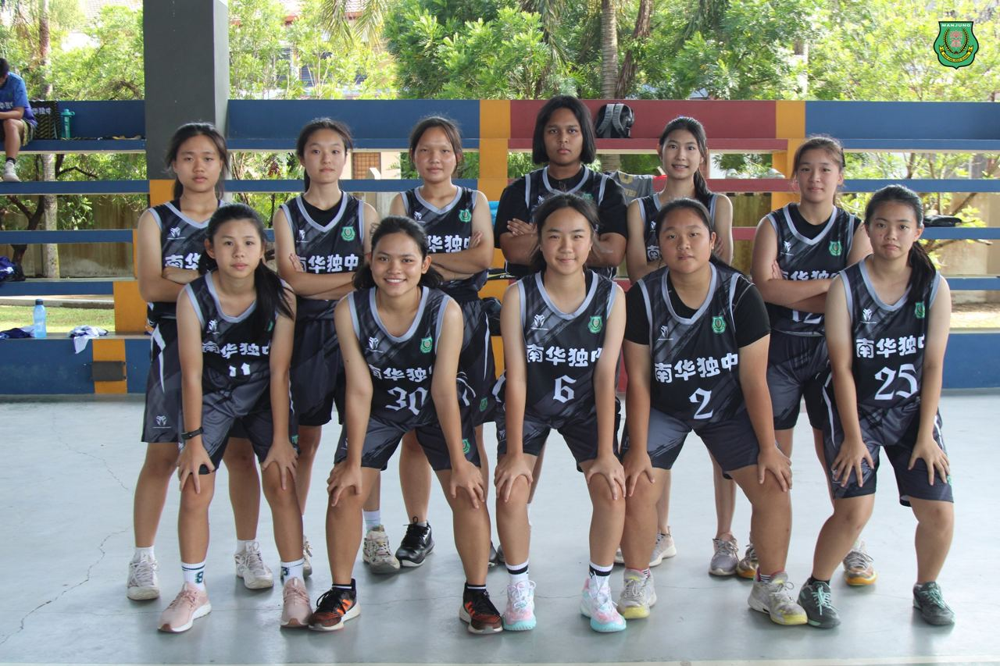
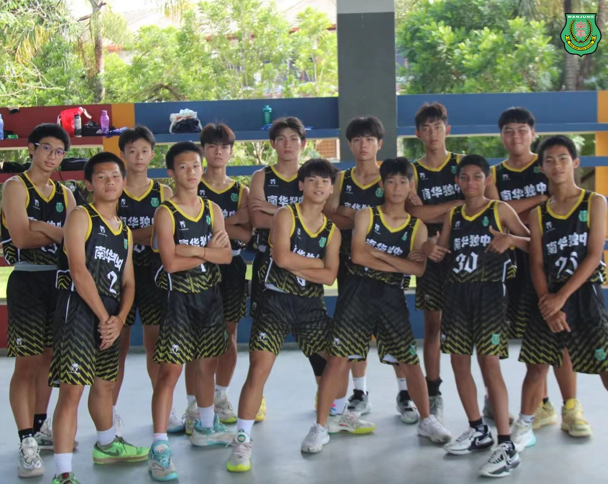
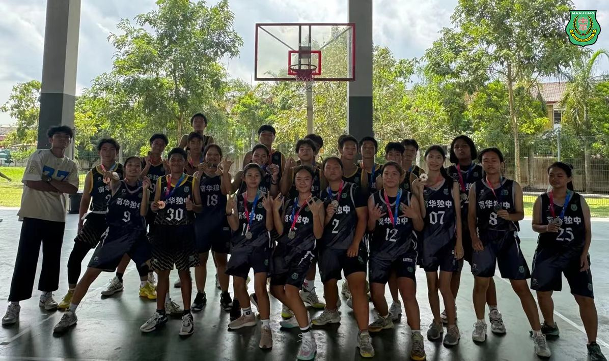
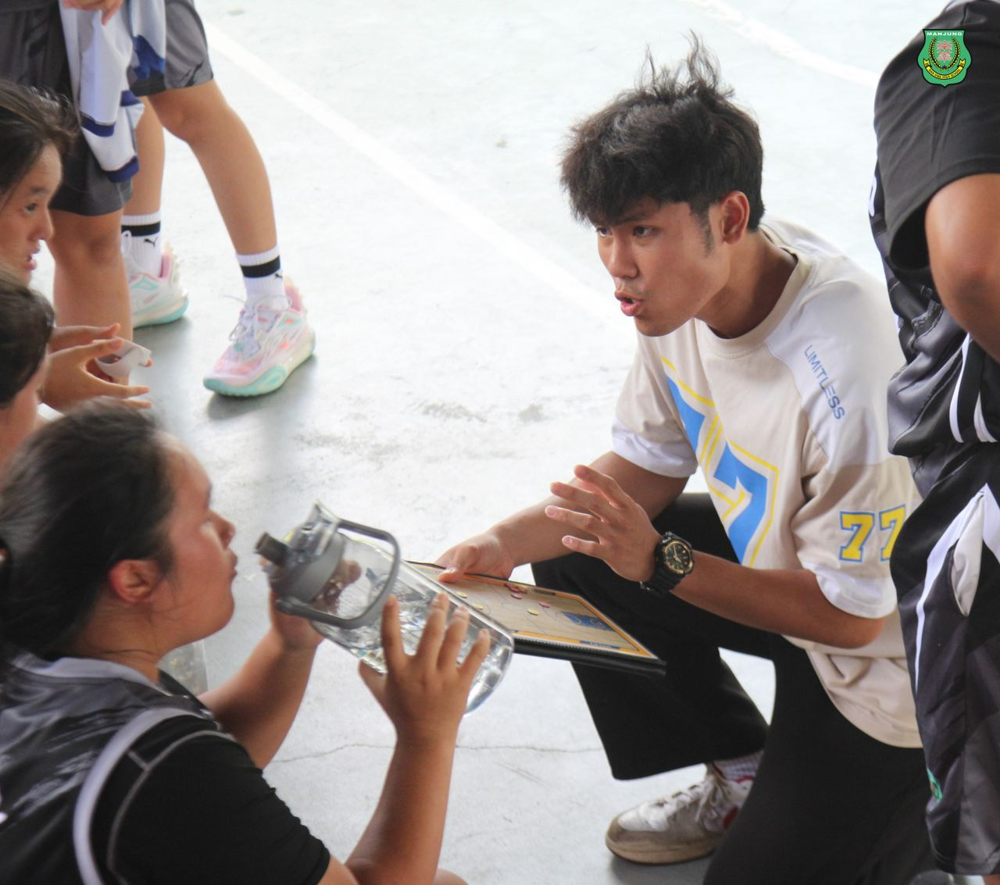
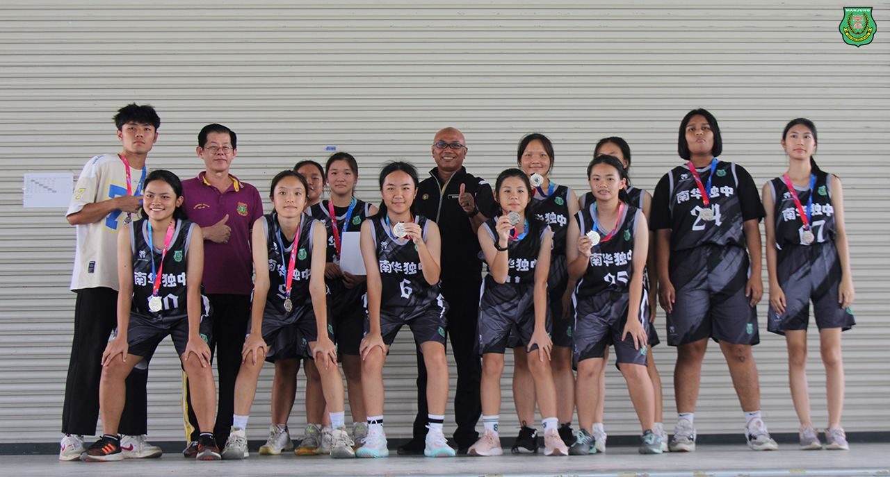
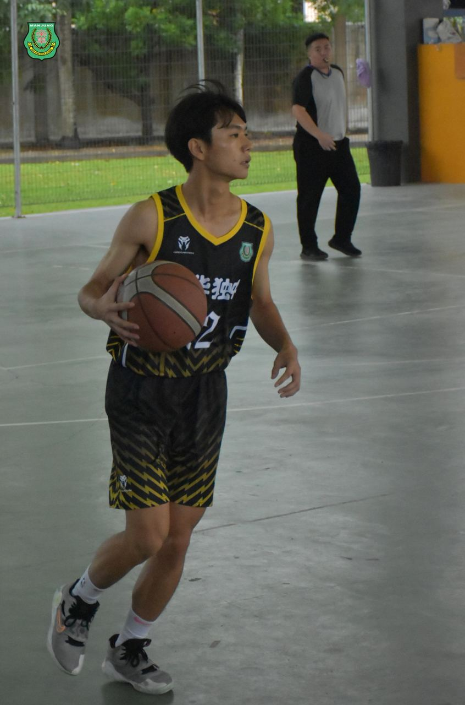
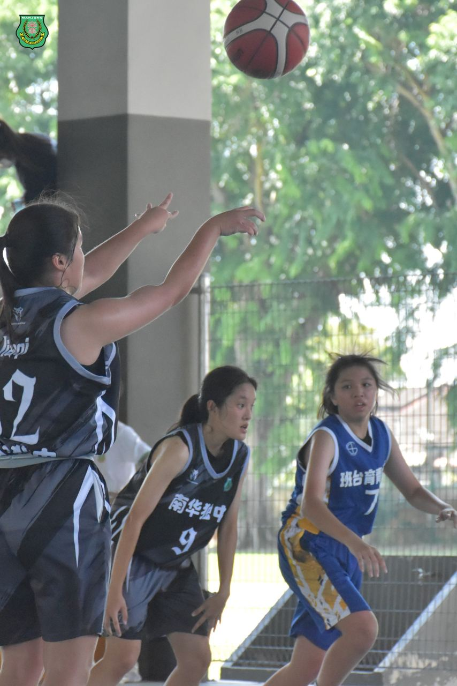
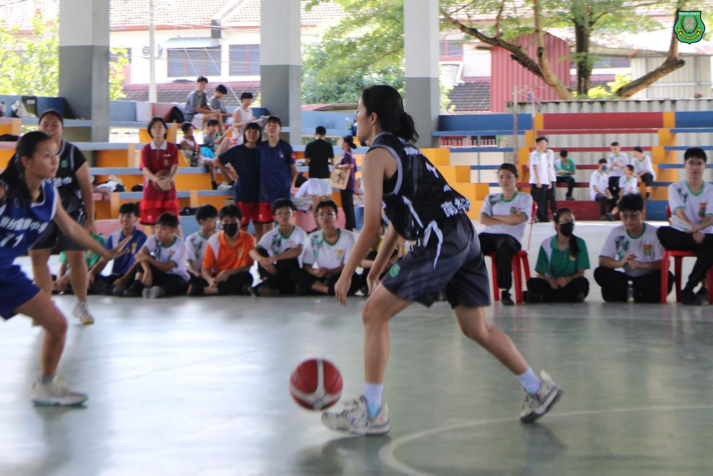

南华独立中学篮球校队
南华独立中学篮球校队
曼绒县学联篮球赛上取得佳绩
曼绒南华独立中学篮球校队在日前举行的曼绒县学联篮球赛（MSSD）中取得了优异的成绩，男子组U18队伍荣获季军，而女子组U18队伍则摘下亚军奖牌，凯旋而归。
本校体育处兼篮球校队教练颜国政老师表示："我为我们的篮球队感到非常自豪。这些成绩来之不易，是队员们辛勤训练和努力拼搏的结果。他们展现了团队合作精神和坚韧不拔的体育精神。"颜老师透露，为了备战这次的县学联篮球赛，球队从数月前就开始加强训练，放学后校队队员都自主留校练习。参与额外的体能和技巧训练课程。"我们的目标是不断提升队员们的个人能力和团队配合，以在比赛中有最佳的表现。这次比赛让队员们积累了宝贵的经验。我们将继续努力，弥补不足，希望在来年的赛事中能够取得更好的成绩"
南华独中校长陈丽冰博士对本校篮球队的表现给予高度评价，并表示："篮球校队为学校争光，这展现了南华学子的优秀品质和潜能。衷心盼望孩子们以强健的体魄闯出属于自己的未来前途。"
#MSSD #曼绒县学联篮球赛 #篮球校队
#南华独中 #曼绒 #实兆远







